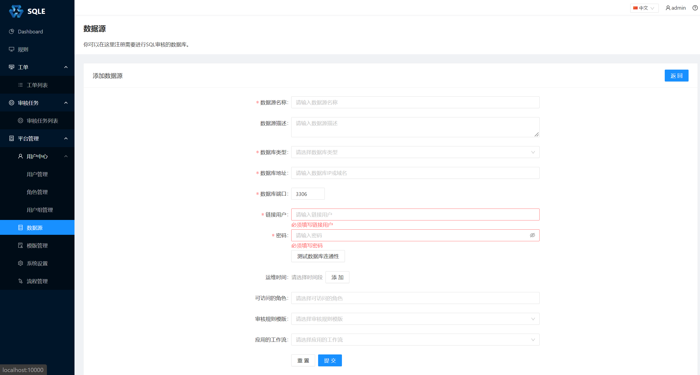
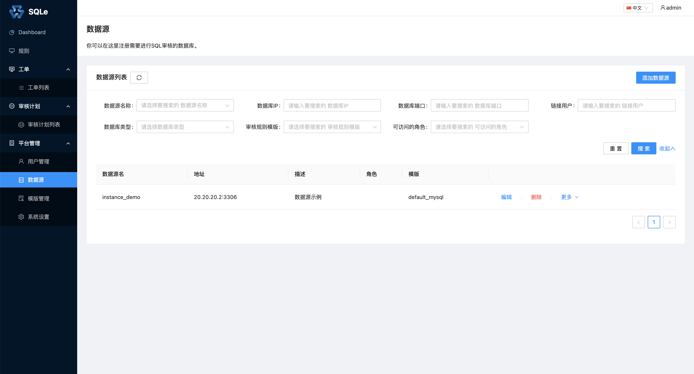

数据源管理
数据源管理 是 SQLE 提供的管理线上数据库的功能。一个数据源对应着一个数据库实例。在审核 SQL 时，如果指定了关联的数据源（动态审核），可以得到更加详细的审核结果。详情可参考审核工单一章。
添加数据源
在左侧导航栏的「平台管理」中的「数据源」页面中，点击「添加数据源」，填写数据源相关信息，如下图： 
- 数据源名称：略
- 数据源描述：略
- 数据库类型：社区版只支持添加 MySQL 数据库，详情见审核插件。
- 数据库IP：略
- 数据库端口：略
- 连接用户：略
- 密码：略
- 测试数据库连通性：填写完必要的信息后，点击此按钮可以测试 SQLE 是否能访问该数据库。
- 运维时间（选填）：如果配置了运维时间, 工单将只能在运维时间内上线(立即上线和定时上线都受此影响), 支持配置多个运维时间, 默认无运维时间,即不限制上线时间
- 可访问角色（选填）：表示数据源可以被哪些角色访问。
- 审核规则模板（选填）：表示数据源有哪些审核规则。
- 应用的工作流（选填）：表示在数据源上创建的工单所应用的工作流。社区版只支持默认的工作流 default，详情见工作流管理。
点击「提交」后，回到数据源列表页面，即可看见刚才添加的数据源： 
如果数据源数量过多，可以通过筛选功能快速的找到某类数据源。
修改数据源
点击数据源列表页面的「编辑」按钮，可以修改指定数据源。修改数据源中的可修改项与添加数据源一致，可参考上面的一节的说明。
删除数据源
点击数据源列表页面的「删除」按钮，可以删除指定数据源。